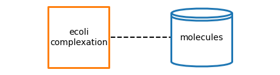
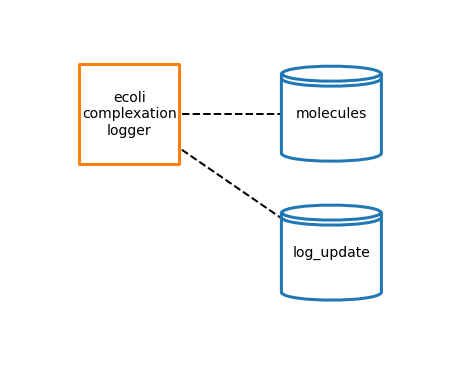

Logger Processes
[1]:
# ONLY RUN THIS CELL ONCE!!
# TODO: Fix this
# Make sure this is running out of vivarium-ecoli directory
import sys
# sys.path[0] += '/..'
s = sys.path[0]
s = s.replace('/notebooks', '')
s = s.replace('/..', '')
sys.path[0] = s
# display system path
sys.path[0]
[1]:
'/Users/eranagmon/code/vivarium-ecoli'
imports
[8]:
from vivarium.plots.topology import plot_topology
from ecoli.library.logging import make_logging_process
Load sim_data
[5]:
from ecoli.library.sim_data import LoadSimData
SIM_DATA_PATH = '../reconstruction/sim_data/kb/simData.cPickle'
load_sim_data = LoadSimData(
sim_data_path=SIM_DATA_PATH,
seed=0)
Complexation
[6]:
from ecoli.processes.complexation import Complexation
# load in parameters
cplx_config = load_sim_data.get_complexation_config()
# initialize the process
complexation = Complexation(cplx_config)
# topology settings
cplx_topo_plot = {
'graph_format': 'vertical',
'buffer': 1,
'node_labels': {
'ecoli-complexation': 'ecoli\ncomplexation'
},
'show_ports': False,
'node_size': 10000,
'dashed_edges': True
}
cplx_logger_topo_plot = {
'graph_format': 'vertical',
'buffer': 1,
'node_labels': {
'ecoli-complexation': 'ecoli\ncomplexation\nlogger'
},
'show_ports': False,
'node_size': 10000,
'dashed_edges': True,
'coordinates': {
'log_update': (1, -2.5)
}
}
[10]:
# initialize the process
complexation = Complexation(cplx_config)
# plot topology
cplx_topology_fig = plot_topology(complexation, cplx_topo_plot)

[11]:
# initialize logger process
complexation_logger = make_logging_process(Complexation)(cplx_config)
# plot topology
cplx_logger_topology_fig = plot_topology(complexation_logger, cplx_logger_topo_plot)
